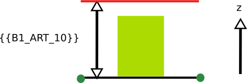

IAUIDF-007 - Hauteur maximale des constructions
Modèle de phrase
La hauteur de construction ne doit pas dépasser {{B1_ART_10}} exprimé dans l'unité {{B1_ART_10T}}
Paramètres
B1_ART_10T
Unité de mesure de la hauteur du bâtiment:
- 1 : Exprimée par rapport au nombre de niveau R.
- 2 : Exprimée en m du sol au faîtage.
- 3 : Exprimée en m par rapport à la hauteur plafond.
- 4 : Exprimée en m du sol au point le plus haut.
- 5 : Exprimée en m par rapport à la hauteur de façade à l'égout.
- 6 : Exprimée en m par référence à la hauteur NGF hors édifices.
- 7 : Exprimée en m par rapport à la hauteur à la côte du trottoir.
- 8 : Exprimée en m par rapport au point le plus haut hors cheminées.
- 9 : Exprimée en m par rapport au point le plus haut hors cheminées, ouvrages techniques.
- 10 : Exprimée en m du sol à l'acrotère.
- 11 : Exprimée en m par rapport au point le plus haut tout inclus.
B1_ART_10
Hauteur maximale autorisée.
Valeur maximale de hauteur en m (selon le mode)
Valeur particulière :
- 99 = non réglementé
Explications
{{B1_ART_10_m}} désigne la hauteur maximale des bâtiments

Implémentation
La vérification de la distance s'effectue dans la classe PredicateIAUIDF.